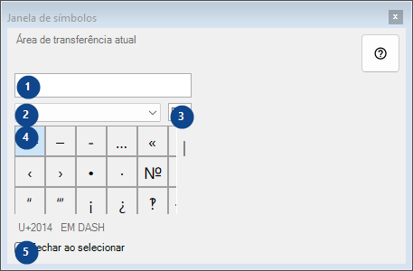
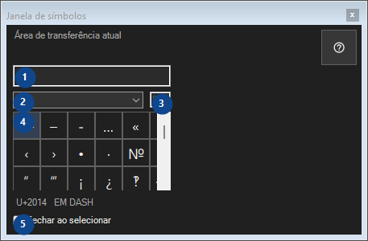

Janela de símbolos
Para que serve
Paleta de caracteres raros: um clique copia o caractere para a área de transferência; tudo permanece neste computador.


Ordem de utilização
Leia as explicações numeradas, escolha os valores necessários e continue com o comando da janela.
Elementos
1. Área de transferência atual
Área de transferência atual
Os seus atalhos2. Conjunto de símbolos
Conjunto de símbolos
Os seus atalhos3. Pesquisar símbolos
Pesquisar por nome, palavras-chave ou código Unicode
Os seus atalhos4. Grade de símbolos
U+2014 EM DASH
Os seus atalhos5. Fechar ao selecionar
Fechar ao selecionar
Os seus atalhos